An Illustrated Guide to Academic Publishing
A short story about how a paper is born — and why almost nobody will read it.
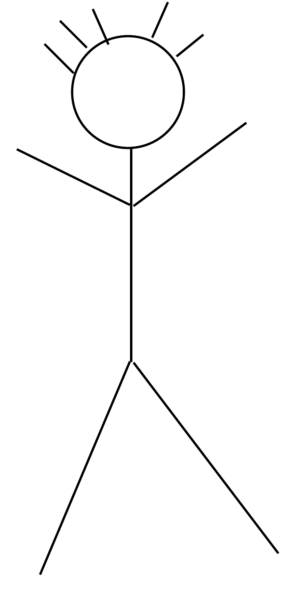
Meet a researcher. Smart. Curious. Slightly overcaffeinated.
This is you. Or someone like you. You went into research because you wanted to understand something the rest of the world hasn’t figured out yet. You probably didn’t go in for the money. You definitely didn’t go in for the email volume.
Your job, more or less, is to take ideas out of your head and put them into the heads of other people. The path between those two points is longer than anyone tells you on day one. Here is what it looks like.
It starts with a speck
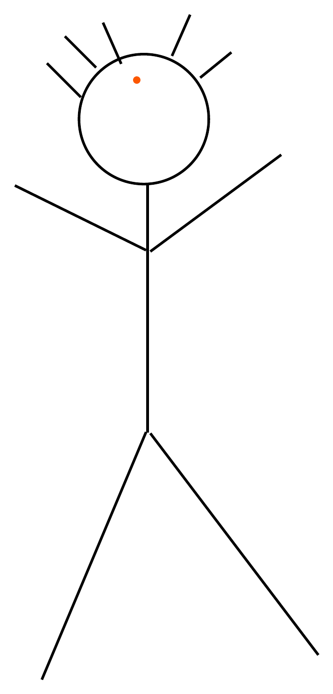
Somewhere in there, an idea.
Every paper begins as a tiny speck — a hunch, a stray sentence in someone else’s discussion section, an experimental result that doesn’t quite fit the textbook.
At this stage, the idea is small enough to fit on the back of a napkin and not quite small enough to ignore. You decide to keep it.
Let’s zoom in
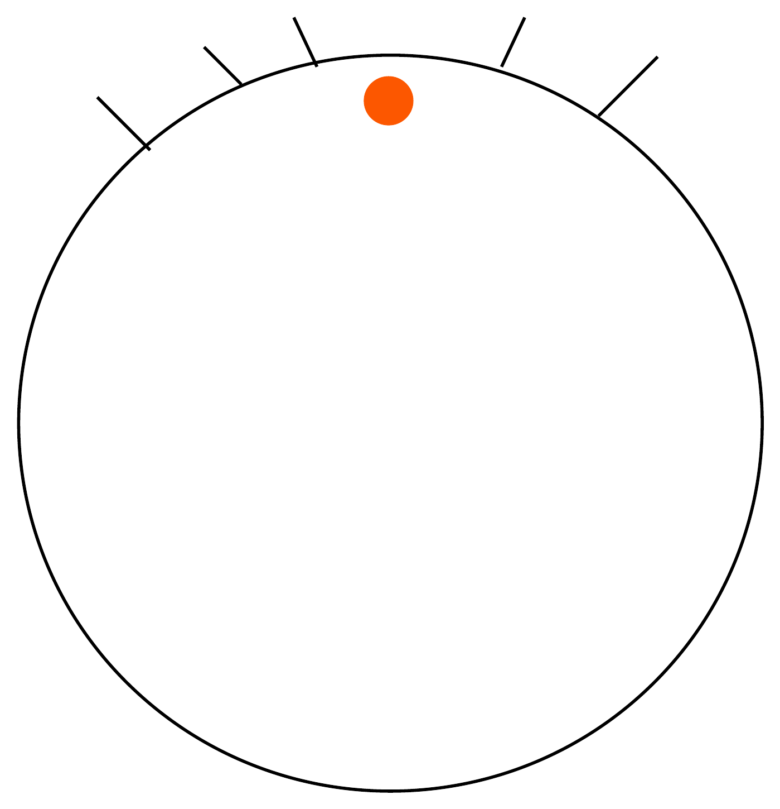
The speck, up close. Still mostly empty space.
Up close, the idea is even less impressive than it looked from across the room. It is small, it is fuzzy, and it is surrounded by an enormous quantity of ‘I’m not sure yet.’
That’s fine. Most things start that way. Now you go to work on it.
You read. You think. You read some more.
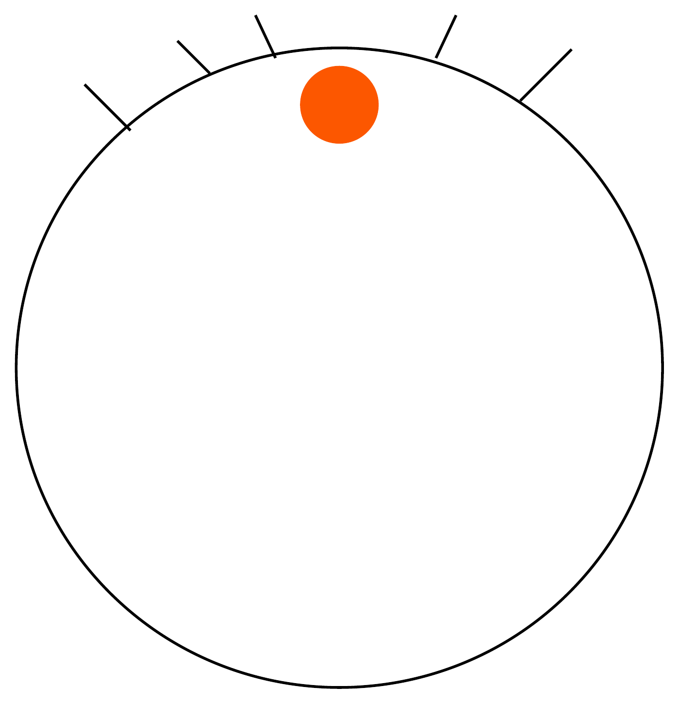
The speck grows a little. Reading helps.
You read papers. You read papers that cite those papers. You read papers that those papers tried to refute. You scribble in margins. You stare at the ceiling. You explain the idea to a friend who is too polite to interrupt.
Slowly, the speck gets bigger. Not because you added anything from outside — but because you finally understand what was already there.
Literature review. Proposal. Funding.
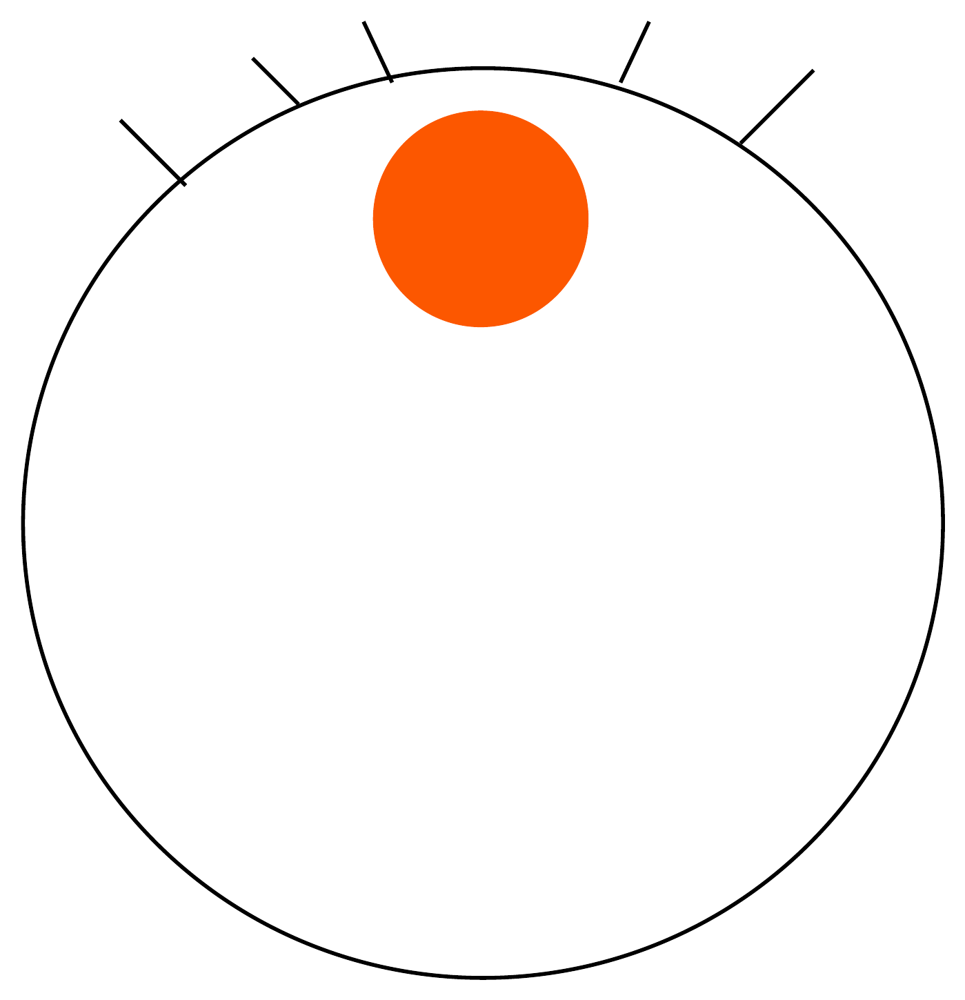
Bureaucracy arrives.
Now things turn administrative. You write a literature review that proves you are not the first person on the planet to have a thought. You write a proposal explaining what you would like to do and why somebody should pay for it.
Then you wait. The idea, meanwhile, keeps growing — partly because you keep thinking about it, partly because explaining it ten times to ten different review panels forces you to make it sharper.
Collect the data. Run the experiments. Ask for help.
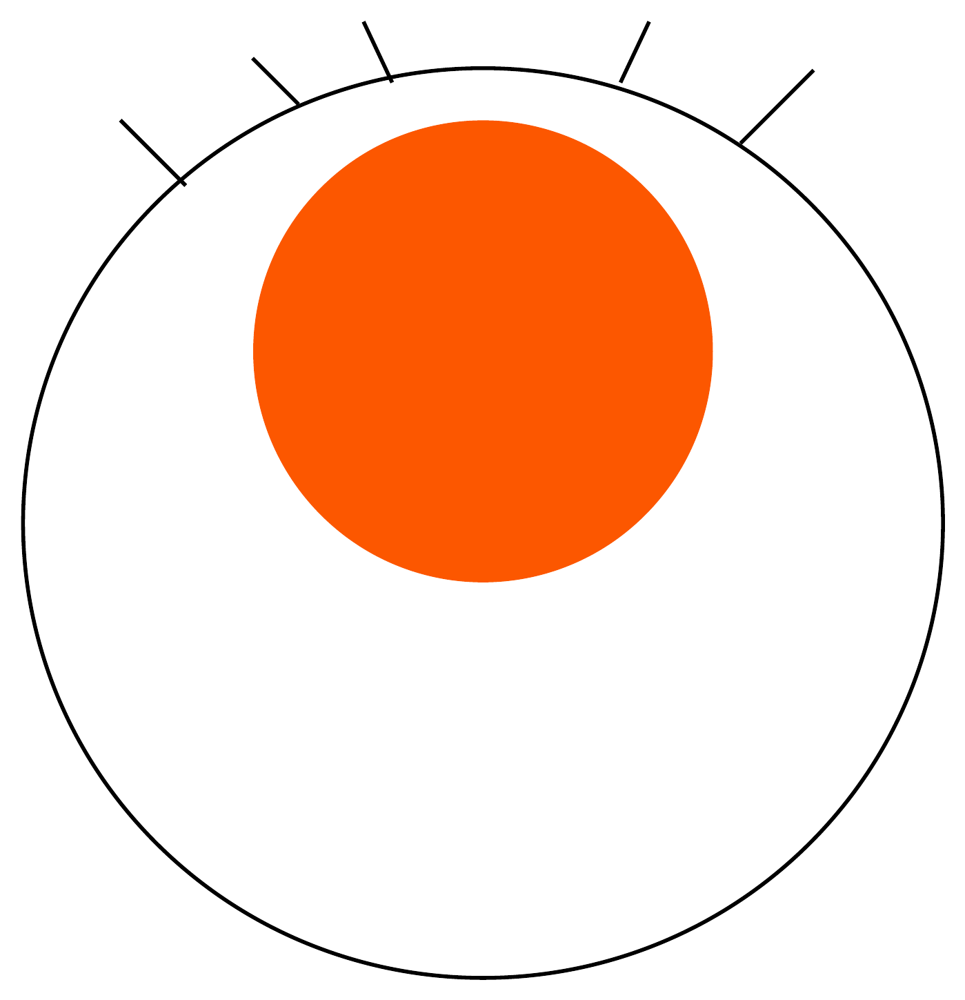
The speck is now noticeably less speck-like.
Funding (finally) comes through, or you proceed without it. Either way, the real work starts: experiments that don’t work, code that doesn’t run, instruments that pick today, of all days, to break.
You ask for help. You email someone you’ve never met. You buy a colleague coffee in exchange for thirty minutes of their attention. You learn, perhaps for the first time, that research is mostly other people.
Draft. Review. Refine. Polish. Repeat.
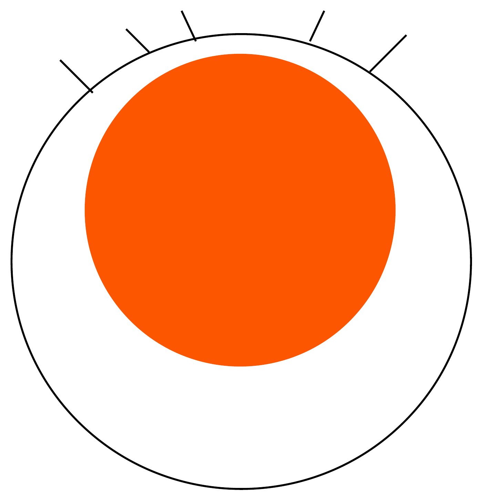
Most of your head is now occupied by one idea.
You write a first draft. It is bad. You knew it would be bad, but it is bad in ways you did not predict. You rewrite. Then you rewrite the rewrite.
By now the idea has filled almost everything in your head. You catch yourself thinking about it in line at the supermarket. You think about it in the shower. Your friends have started to change the subject.
You submit.
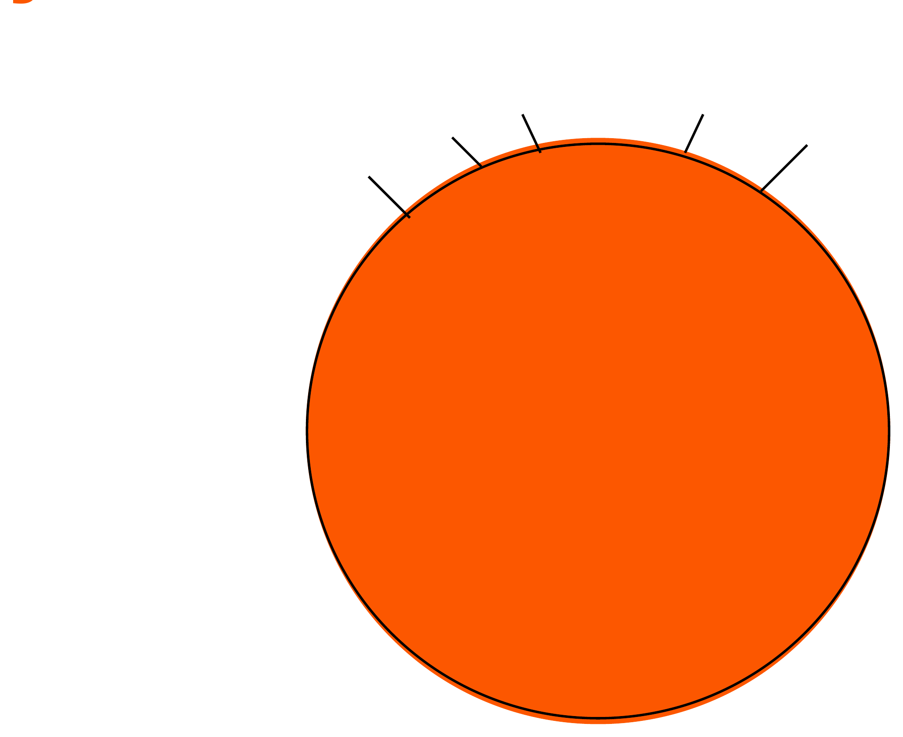
There is no other thought.
When you finally click ‘submit,’ there is nothing else inside your head. The idea has taken up all the space. You refresh the submission portal. You refresh it again. You explain to family members what ‘desk reject’ means. They nod politely.
Then the reviewers reply.
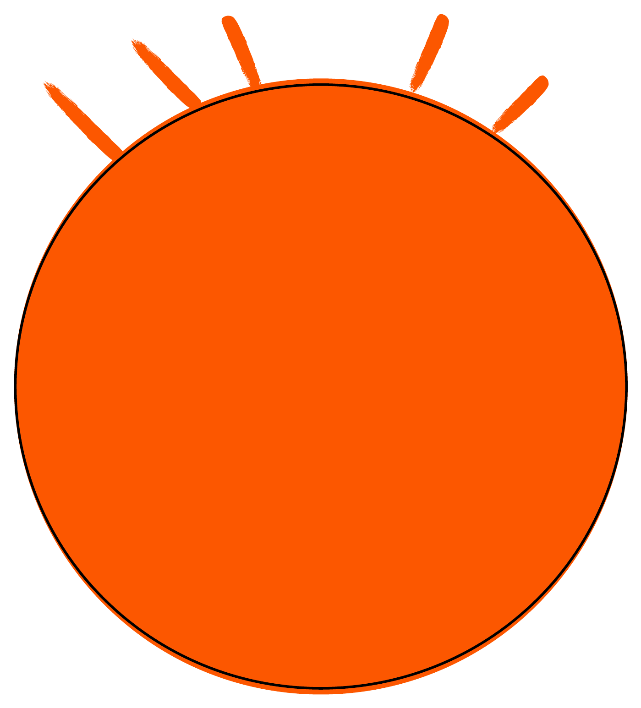
They have remarks.
Reviewer 1 is generous. Reviewer 2 is not. Reviewer 3 appears to have read a different paper, possibly in a different field. You read their comments three times — once for content, once out of anger, and once to actually take notes.
You revise. You respond. You explain, in the most patient voice you can summon in writing, why their kind suggestion would in fact destroy the paper.
Accepted.
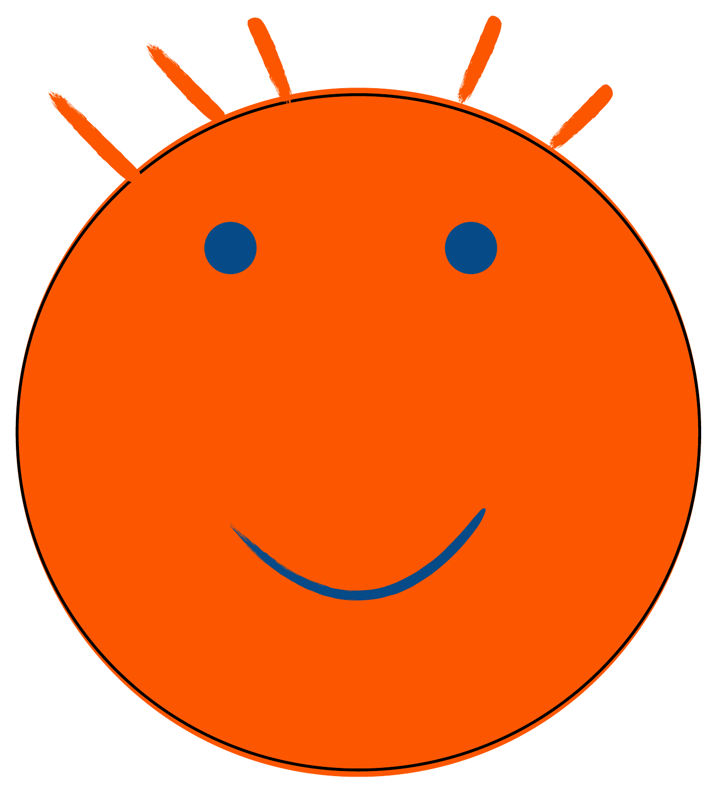
Pride. Quite a lot of it, actually.
The email arrives. You read it twice to make sure. You tell your partner. You tell your supervisor. You tell, with somewhat less success, the person at the next desk who has been watching you suffer for the past eighteen months.
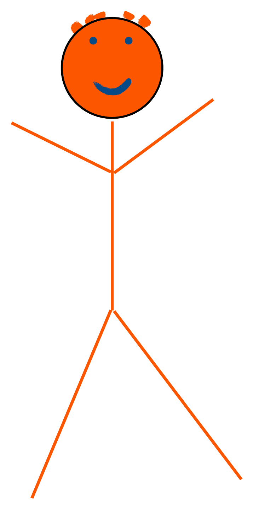
This is you. Proud and happy.
Take the afternoon. You earned it. The paper is out. Your name is on it. Somewhere in a server in Amsterdam, a row has been added to a database.
Now zoom out.
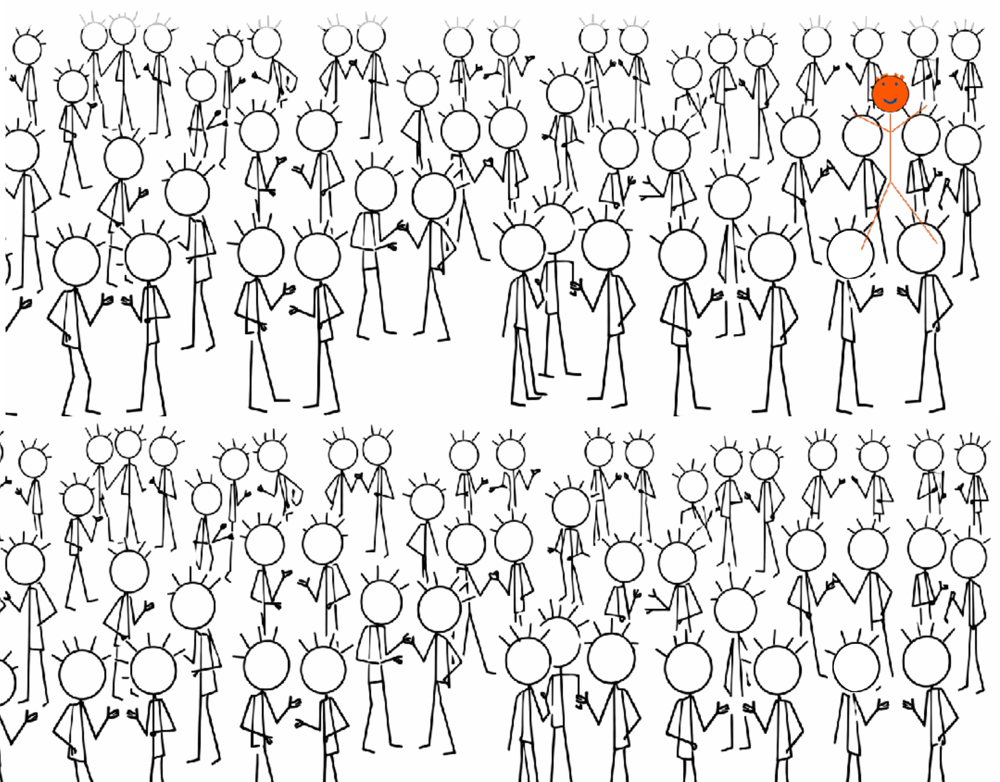
Find yourself. Take your time.
Here is what almost nobody tells you. You are not the only person who just published. Roughly five million peer-reviewed papers go out into the world every year. Each one is somebody’s two-year speck. Each one represents somebody’s afternoon of pride.
Most of them are read by almost no one. Half of all published papers are cited fewer than three times. A large fraction are never cited at all. The median paper has roughly the impact of a tweet that nobody retweeted.
That is the part that hurts. The work was real. The idea was real. The result was real. The visibility was not.
Your research is good. But nobody knows it.
The problem isn’t the quality of the work. The problem is that ‘publish and wait’ stopped working sometime around when search engines started ranking by engagement and AI assistants started answering questions without showing their sources.
Citations, grants, collaborations, invitations to give talks — they all start with someone, somewhere, encountering your work and remembering it. That encounter no longer happens on its own.
We built Loud Camel for the people in that crowd. Once a month, we put together a short brief: who in your field has started working on something near your topic, which conversations are happening in places that LLMs and search engines actually read, which dormant contacts are worth a two-line reconnect. You decide what to send. We just make sure you have something to send.
loudcamel.com — reclaim the visibility your research deserves.